The desktop boxel editor.
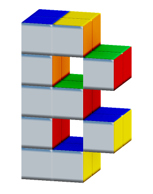
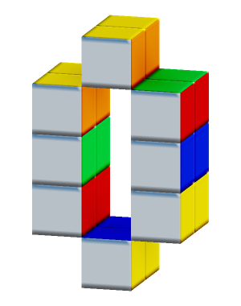
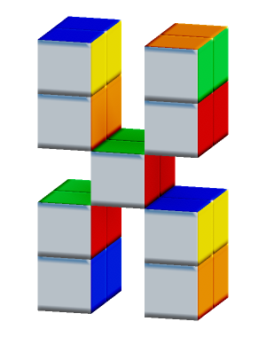
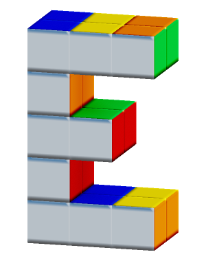
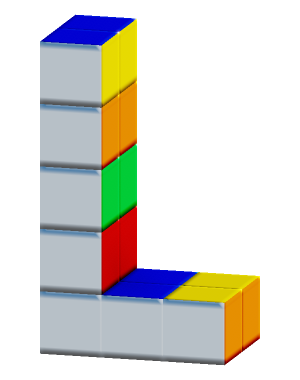
It roxels.
Make characters, props and worlds.
Paint every face. Move every part.
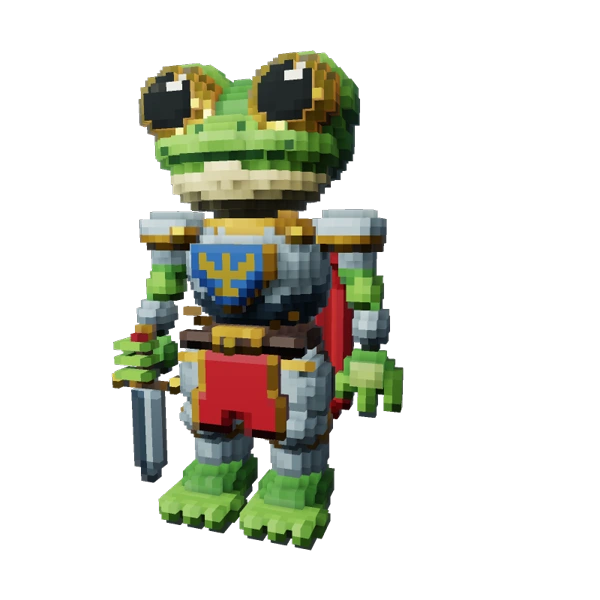
Made in Boxel.
Little characters, snacks, and things for your next game. Pick one for a closer look.
{kind=link}
{kind=link}
{kind=link}
{kind=link}
{kind=link}
{kind=link}
{kind=link}
{kind=link}
{kind=link}
{kind=link}
{kind=link}
{kind=link}
The editor
Build your model.
Make it move.
Per-face materials. Editable shapes. Joint pivots and keyframes. One desktop workspace, from the first boxel to the final pose.

MakeSculpt, extrude, mirror, generate.
PaintColor and material on each face.
MoveSet pivots. Pose. Add keyframes.
Take it with youExport to your game or next tool.
What's a boxel?
Think Minecraft
blocks.
Grass on top. Dirt on the sides.
Different faces, same block.
Minecraft's grass block already gets the idea. In Boxel, every little cube can have a different color and material on each of its six faces.
Paint an eye on a character, the end grain on a log, or a whole shelf of books. The detail lives on the faces.
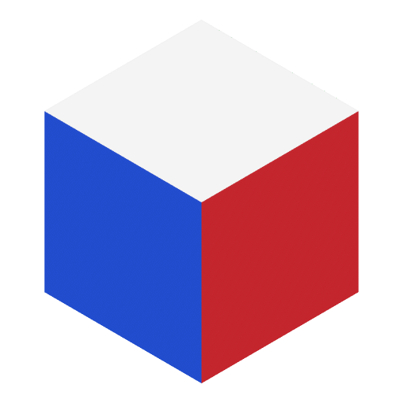
One boxel. Six faces.
Each with its own material.
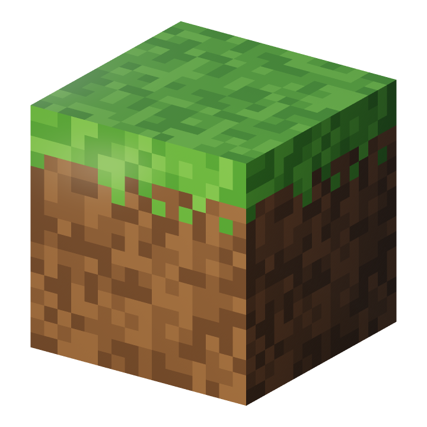
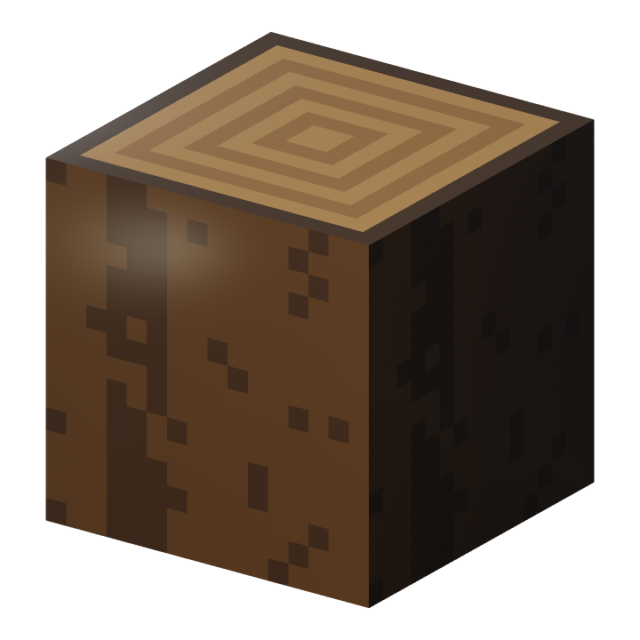
Bark on the sides.
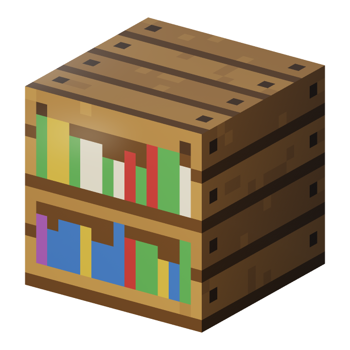
Wood everywhere else.
Built and face-painted in Boxel.
Learn by making
Your first boxel
has company.
Meet Patch. A little practice bot with a few things to fix. Open Learn in the editor and make them right.
- Watch a move. See the tool at work in your actual workspace.
- Try it yourself. Place, paint, select, and undo. The lesson checks your work.
- Keep exploring. Your own project returns when the lesson ends.
Eleven guided projects, from placing a boxel to exporting a model.
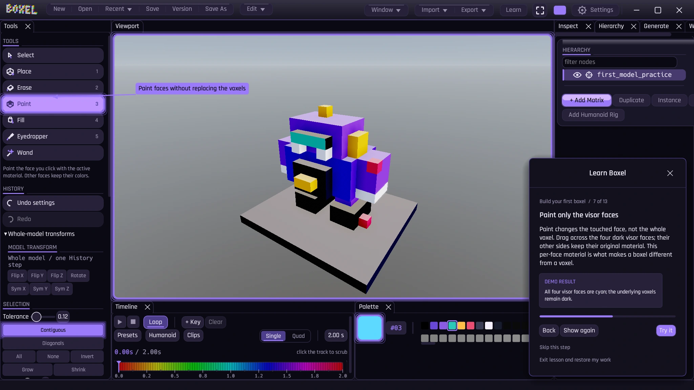
Still on the workbench
Come see what’s next.
Boxel is in development. Public downloads are coming.
Follow the builds, new art, and release news with Trent.